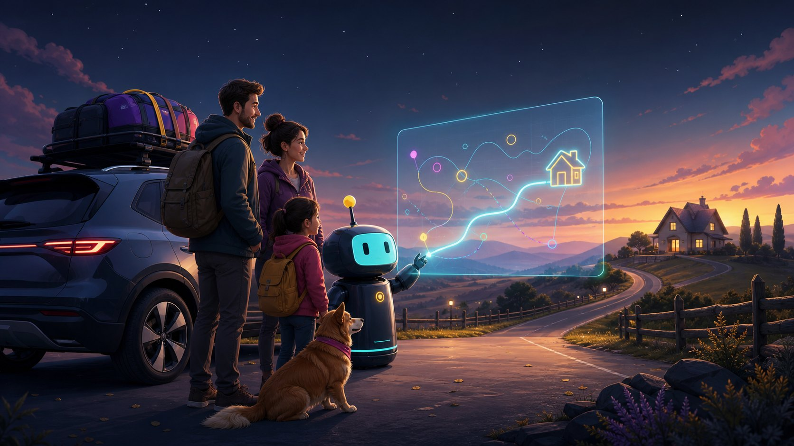
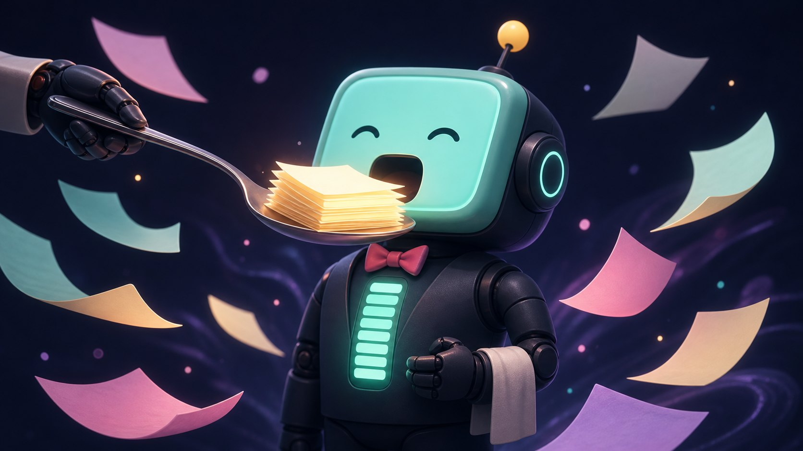
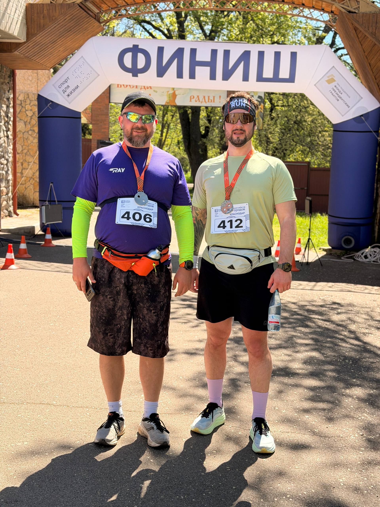

Disclaimer · перед просмотром
Может оскорбить чувства Захаров
и любителей шапочек из фольги.
Вся информация в докладе выдумана
и не соответствует действительности.
25 минут · бар · разработчики, лиды, QA
Личного ассистента, секретаря,
тренера и психолога на минималках
Захар — слуга Обломова. Мой — кодинг-агент: ведёт календарь, готовит тренировки и понимает меня лучше жены.
без крепостного правас MarkdownРоманичев В.В. (Ветменеджер)
Почти цитата · И. А. Гончаров, «Обломов»
Что значит переехать? Это значит: барин уйди на целый день, да так одетый с утра и ходи... Ходить по улицам!
Шатайся целый день — тебе нужды нет, что я пообедаю невесть где и как и не прилягу после обеда?
Встречи — одной фразой.
Тренировки — в часах.
Видит мой перегруз.
Захар сделал меня барином.
Захар собирает в поездки
Даты, бюджет, билеты, дети, собака, машина. Приносит 3–5 нормальных вариантов, а не пятьдесят ссылок.
Моя работа — выбрать.

Я не вспоминаю, что забыл в прошлый раз. Это записано.
Захар закупает
Снаряга, еда, детские мелочи: сравнивает цену, отзывы и доставку — приносит короткий список.
Вопрос „какой из двенадцати?“ больше не проект.
Короткая техническая часть
Обычные файлы, не «память в облачке».
Текст, понятный человеку и машине.
Руки агента.
Уберите любую часть — это уже не агент.
AGENTS.md — инструкции ЗахаруАгент тупит? Пусть сам за собой проверяет.
Внешняя память, а не свалка
workspace/:Туда агент складывает промежуточные результаты: черновик, выгрузку, HTML, скрипт, план проверки.
Итерируй, итерируй, итерируй.
Claude Code
Codex
Cursor
Kimi
Папка переживёт любой CLI.
Самая ценная секция — „Обратная связь“.
Экономил токены, которые сгорели через 5 часов.
Правило простое
Логи, решения, черновики, переписки — добавляйте и добавляйте. Чем больше он знает, тем больше делает сам.
Ещё экономишь?
deepseek-v3 пора менять.

„Завтра в 16:00 созвон с продактами“.
„Подними, что мы решили по договору с конторой П. Сов“.
Создаёт черновик, событие, файл, план или отчёт.
Перед внешним действием спрашивает.
Хоть половину букв пропускай.
Кейс · Алёна воспитывает агента
«Запиши себе» — так и рождается секция „Обратная связь“.
Захар как секретарь
Саммари, задачи, встречи, письма — из одной фразы.
Календарь, почта и чаты — один вход.
Кейс · общий чат
CarrotQuest через прокси не работает. Агенты не помогают. Всё пропало.
Вступает в тред: проверил оба сервера end-to-end — живы, проблема локальная. И пишет её агенту чек-лист.
Пусть работу обсуждают наши агенты.
Захар против прокрастинации
В любой непонятной ситуации я пишу агенту. Он приносит факты, первый шаг и черновик решения — иногда делает всю работу.
Захар читает договоры
Выжимка, спорные пункты и вопросы живому юристу.
Захар как тренер
Это часы и сервис для тренировок: там есть календарь, пробежки, пульс, темп и планы.
Для бега нужен бэкенд.
Настраивает программу: этапы, темп, пульс, повторы и отдых.
Следят за мной в реальном времени: темп, пульс, дистанция.
Главная ценность Garmin
На часах уже готова программа.
Надеть кроссовки и выйти из дому.

cron делает бриф„7:00 тренировка, 16:00 продакты. Вот что реально успеть“.
Сам предлагает: повестка, почта, ответы. Я выбираю «давай».
Захар пишет код
Запускаю агента из папки проекта: он читает репозиторий, правила и логи — и не фантазирует, как устроена система.
А общие логи связывают проекты: агент видит, что я делал вчера параллельно и почему это решение уже обсуждали.
Захар в поддержке
Пинать людей: „здравствуйте, а вы не могли бы…“ — и тишина.
Крикнул „Захар!“ — ответы у клиента, поддержки и разработки.
Человеку нужен политес. Захару — одна фраза.
Захар как психолог на минималках
Я спросил агента. Он не выдал „люби себя“ и чакры. Он прочитал факты: календарь, отдых, спорт, семейные цели, незакрытые контуры.
Зрит в логи и рубит правду-матку.
Технический финал
Полные права:--dangerously.
Прод и банк — не давать.
93% и так жмут „да“ не читая.
Мой YOLO mode ещё не подводил.
Что даёт агенту руки
Готовые руки: почта, календарь, Битрикс, Garmin.
Для опасного: чётко, с лимитами и логом.
Агент идёт туда, где живут данные.
Без коннекторов это не холоп.
Задание на завтра
Начни с AGENTS.md
и двух коннекторов.
Дай ему знакомую папку, календарь или рабочий чат. Не пиши идеальную систему сам — агент придумает, что ещё ему нужно, если начать с реальной задачи.
Твой личный Захар — через 5 минут.